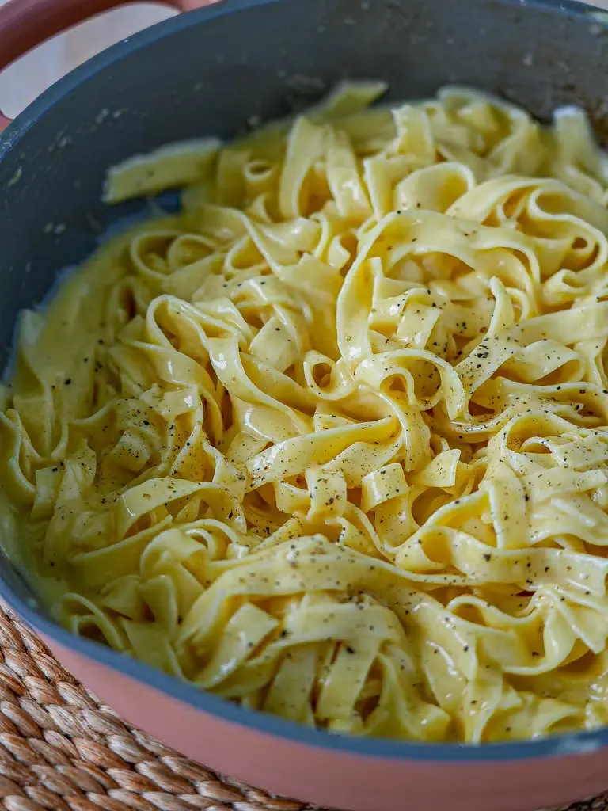

fetuccine

Description
A rich, indulgent pasta dish coated in a velvety sauce of melted butter, heavy cream, and freshly grated Parmesan.
Ingrediants
- 350g fettuccine pasta
- 60g unsalted butter
- 1 cup heavy cream
- 1 ½ cups freshly grated Parmesan cheese
- 2 cloves garlic, minced
- Pinch of ground nutmeg
- Salt and freshly cracked black pepper
Steps
- Cook the fettuccine in a pot of salted boiling water until al dente, reserving ½ cup of pasta water before draining.
- Melt butter in a large pan over medium-low heat, add minced garlic, and cook for 1 minute until fragrant.
- Pour in the heavy cream and let it simmer gently for 3 to 4 minutes.
- Turn the heat to low, whisk in the Parmesan cheese until smooth, and season with salt, pepper, and nutmeg.
- Add the drained pasta into the sauce, tossing quickly to coat (add splashes of reserved pasta water if the sauce becomes too thick), and serve immediately.
Back home